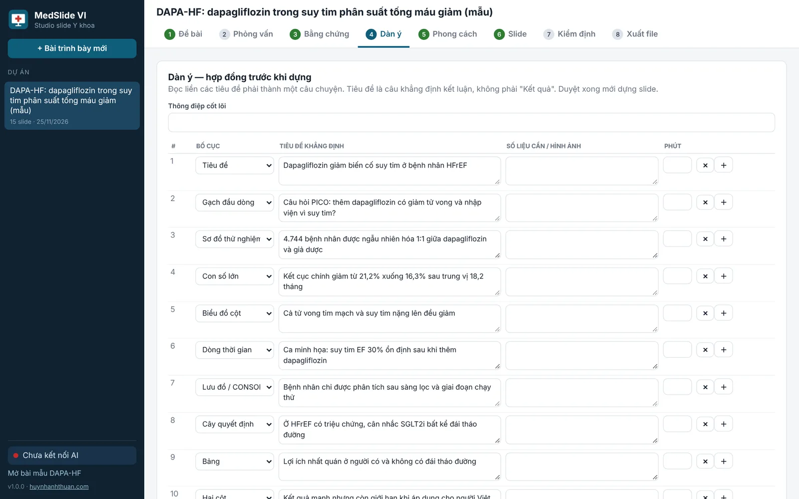
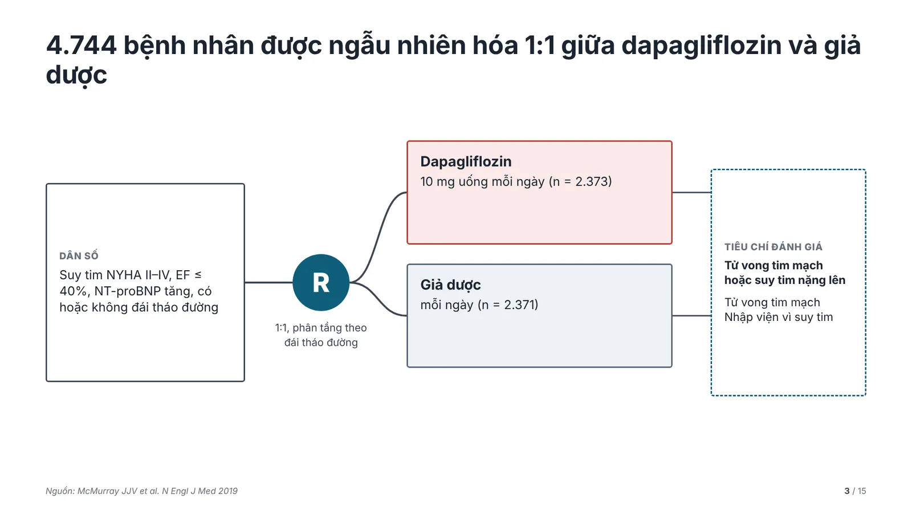
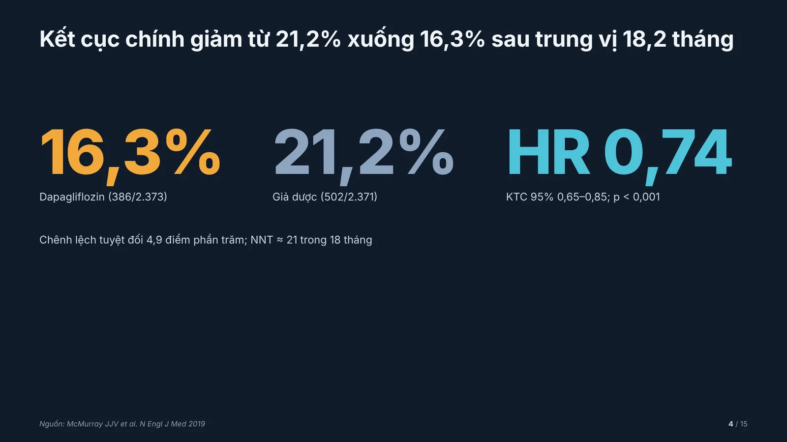

Slide Y khoa không bịa số.
Bạn đưa chủ đề và bài báo. AI hỏi bạn đúng những điều cần hỏi, tra PubMed thật, dựng slide có tiêu đề là kết luận, rồi soát từng con số như soát y lệnh trước khi bạn bước lên bục.
Windows 10 · 11PPTX sửa được · PDF · HTMLDùng AI bạn đã có
Minh họa phiếu kiểm định. Lỗi chặn nhấp nháy đỏ cho tới khi bạn sửa.
Từ N0 đến N7: hỏi trước, làm sau, kiểm cuối.
AI thường làm slide rất nhanh, nhưng tự quyết thay bạn, lấy số từ trí nhớ và dễ lẫn kết cục này sang kết cục khác. MedSlide đi từng ngày một, và có hai chỗ dừng lại chờ bạn gật đầu.
- N0 · ĐỀ BÀI
Bạn kể, AI nghe
Chủ đề, loại bài, khán giả, thời lượng. Thả vào PDF bài báo, phác đồ, khuyến cáo.
- N1 · PHỎNG VẤN
Hỏi một lượt
Tối đa 6 câu, mỗi câu có sẵn lựa chọn khuyến nghị kèm lý do. Không hỏi điều đã có trong tài liệu.
- N2 · BẰNG CHỨNG
PubMed thật
Tra trực tiếp, lấy abstract và toàn văn mở. PMID chỉ đến từ tra cứu, không từ trí nhớ AI.
- N3 · DÀN Ý
Hợp đồng
Mỗi tiêu đề là một câu kết luận. Đọc liền các tiêu đề thành câu chuyện. Bạn duyệt rồi mới dựng.
- N4 · PHONG CÁCH
Chọn bằng mắt
Năm phong cách hiện cùng một slide mẫu. Bấm vào cái bạn thích.
- N5 · DỰNG
16 bố cục y khoa
Thử nghiệm thành sơ đồ, CONSORT thành lưu đồ, ca bệnh thành dòng thời gian. Mỗi con số có sổ ghi nguồn.
- N6 · KIỂM ĐỊNH
Soát như y lệnh
Số không nguồn, PMID sai, cường điệu, lộ danh tính, chữ "máy làm". Thêm một AI khác phản biện.
- N7 · XUẤT
Mang lên bục
PowerPoint sửa được, PDF 16:9, HTML có bút laser, khoanh tròn và ghi chú người nói.


Slide trông như bác sĩ làm, không như máy làm.
Không lưới thẻ số, không chữ phát sáng, không icon trang trí. Nhánh can thiệp và nhánh chứng giữ một màu suốt bài. Chữ đủ to để hàng ghế cuối đọc được.





Sáu thứ khiến bạn mất mặt trên bục, máy bắt trước.
Đỏ là lỗi chặn: còn thì phiếu kiểm định chưa cho đạt. Vàng là lưu ý: nên xem lại.
Con số từ trên trời rơi xuống
Mỗi số trên slide phải nằm trong sổ ghi nguồn, kèm câu trích nguyên văn từ bài báo. Số đúng nhưng đặt sai slide cũng bị bắt.
PMID ma
Đối chiếu PubMed và Crossref: tiêu đề, năm, tác giả đầu. Tài liệu bịa hay sai năm đều bị chặn.
"Giảm" khi chưa giảm
Tiêu đề nói giảm, cải thiện, vượt trội trong khi KTC 95% chứa 1 hoặc p ≥ 0,05 thì không được qua.
Lộ người bệnh
Họ tên, ngày điều trị, số điện thoại, mã bệnh án, số BHYT, địa chỉ: nhận diện theo cách viết tiếng Việt.
Thiếu thì nói thiếu
Không có số, AI ghi [CẦN BỔ SUNG: …] và tô vàng trên slide, thay vì đoán cho tròn câu.
Giọng văn máy móc
Sáo ngữ, emoji, "bấm tiếp để xem" nằm trên slide, tiêu đề kiểu "Kết quả", slide quá 40 chữ.
Chạy bằng AI bạn đang trả tiền.
MedSlide gọi thẳng công cụ AI đã đăng nhập trên máy bạn. Đặt thêm một AI dự phòng để tự chuyển sang khi AI chính lỗi. Ca bệnh nhạy cảm thì chạy Ollama, chữ không ra khỏi máy.
Bài trình bày tới, để máy soát số giúp bạn.
Miễn phí. Tải về, kết nối AI, mở bài mẫu DAPA-HF để xem một bài hoàn chỉnh trong 5 phút.
More info → Run anyway
Kết nối AI → Thử → Lưu
Documents\MedSlide VI Studio
Trước khi tải.
Số liệu trên slide có tin được không?
MedSlide giảm sai sót chứ không thay được người đọc lại. AI chỉ được lấy số từ tài liệu bạn đưa vào và từ bài tra được, mỗi số kèm câu trích nguyên văn, và phiếu kiểm định báo những số không có nguồn. Trước khi trình bày, bạn vẫn mở bài gốc đối chiếu các số chính.
Dữ liệu ca bệnh có bị gửi đi đâu không?
Dự án nằm trên máy bạn. Phần chữ cần xử lý được gửi tới AI bạn chọn, theo chính sách của nhà cung cấp đó. Hãy ẩn danh ca bệnh trước khi đưa vào; nếu không muốn chữ rời máy, chọn Ollama. Bộ quét chỉ đọc chữ, hình ảnh bạn vẫn tự xem lại.
PowerPoint xuất ra có sửa được không?
Có. Chữ, bảng, biểu đồ, sơ đồ đều là đối tượng PowerPoint thật, có cả ghi chú người nói. Mở bằng PowerPoint hoặc Google Slides rồi chỉnh tiếp.
Làm slide tiếng Anh cho hội nghị quốc tế được không?
Được. Chọn English ở bước Đề bài: chữ trên slide bằng tiếng Anh y khoa, số thập phân dùng dấu chấm.
Có mất phí không?
Ứng dụng miễn phí. Việc tạo slide dùng hạn mức tài khoản AI bạn đang có; tra PubMed, Europe PMC, Crossref miễn phí.